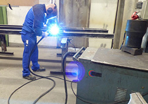
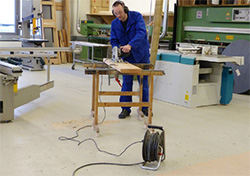
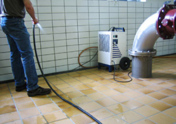

Abb. 6
Abb. 7
Hohe mechanische (Abb. 6 und 7) sowie thermische und mechanische (Abb. 8) Einwirkung auf die eingesetzten elektrischen Betriebsmittel
|
|
Abb. 6 |
Abb. 7 |

Abb. 8
 |  | ||
Abb. 9 | Hohe mechanische und thermische Einwirkungen auf die Anschlussleitung des Elektroschweißgerätes | Abb. 10 | Hohe mechanische Einwirkungen durch herabfallende Teile möglich |
 | |||
Abb. 11 | Strahlwassereinwirkung auf Anschlussleitung und Betriebsmittel | ||